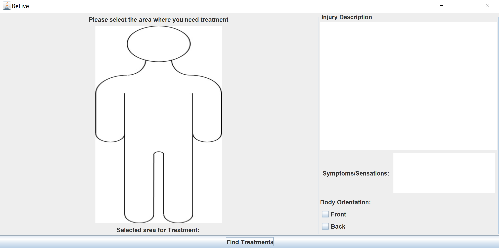
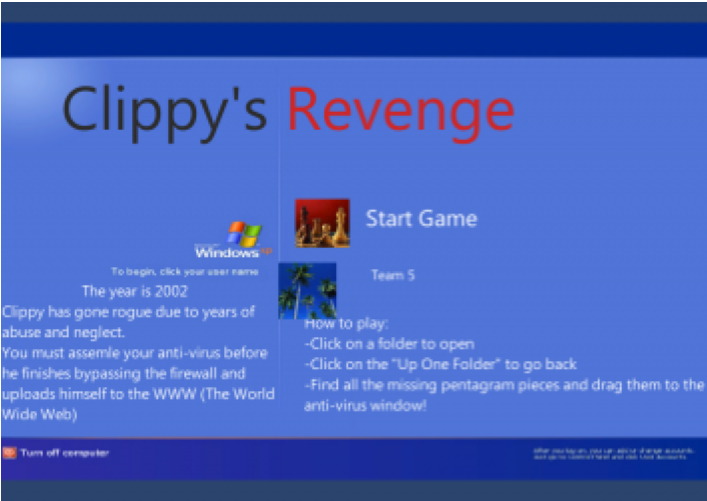
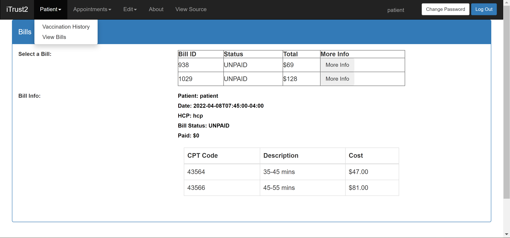
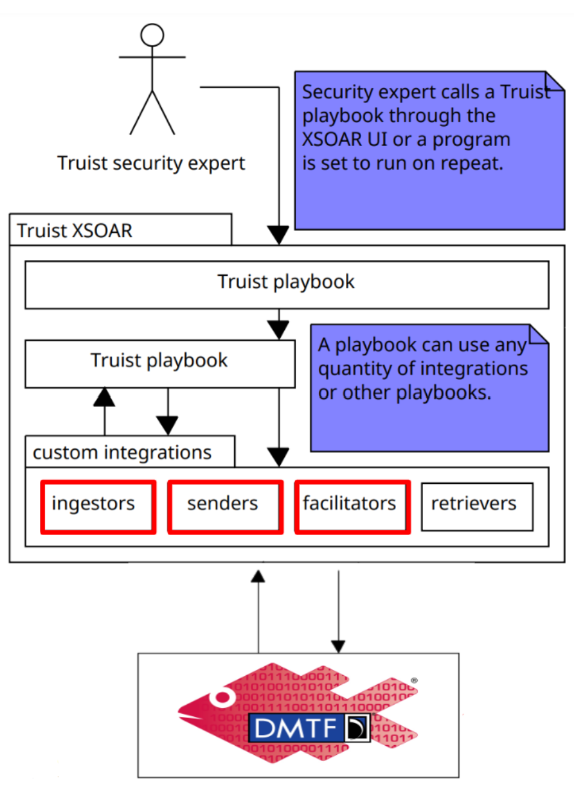
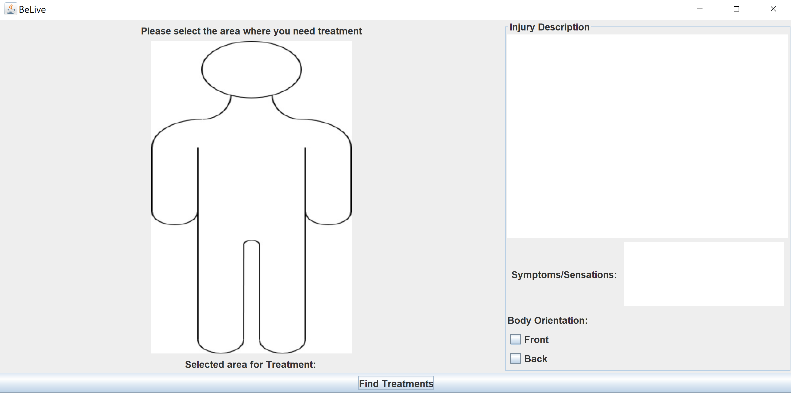
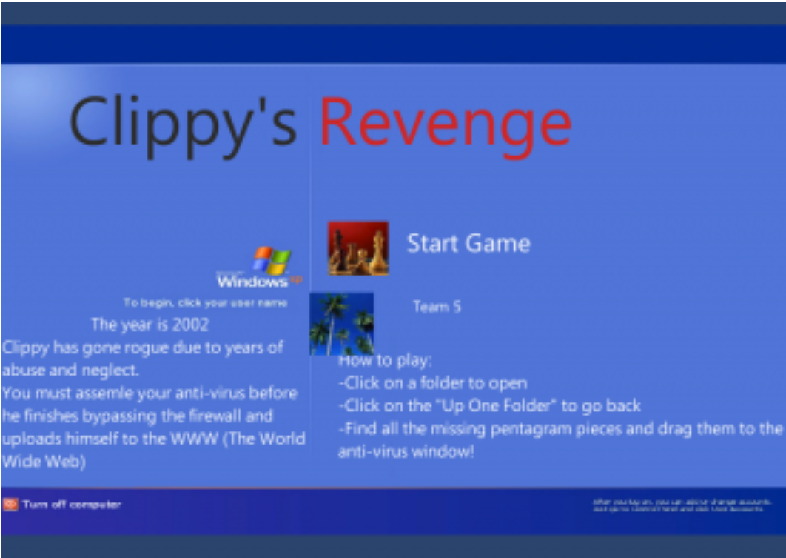
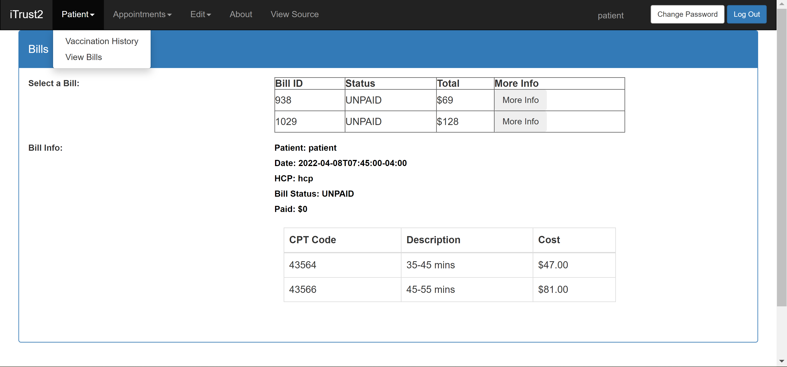
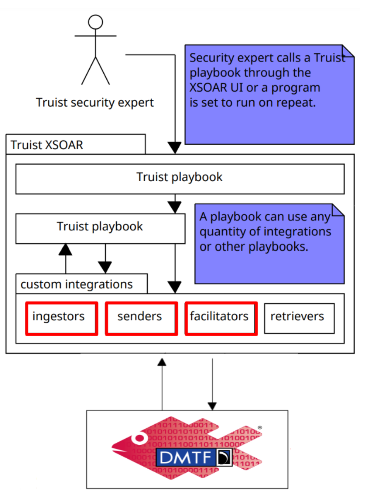
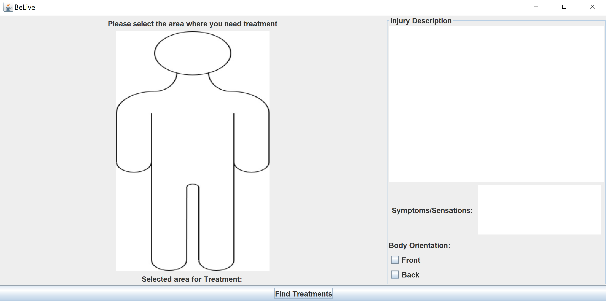
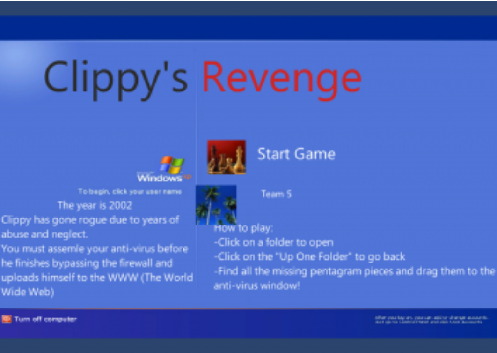
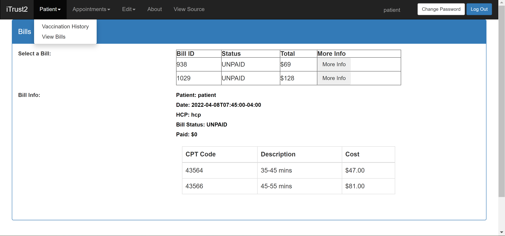
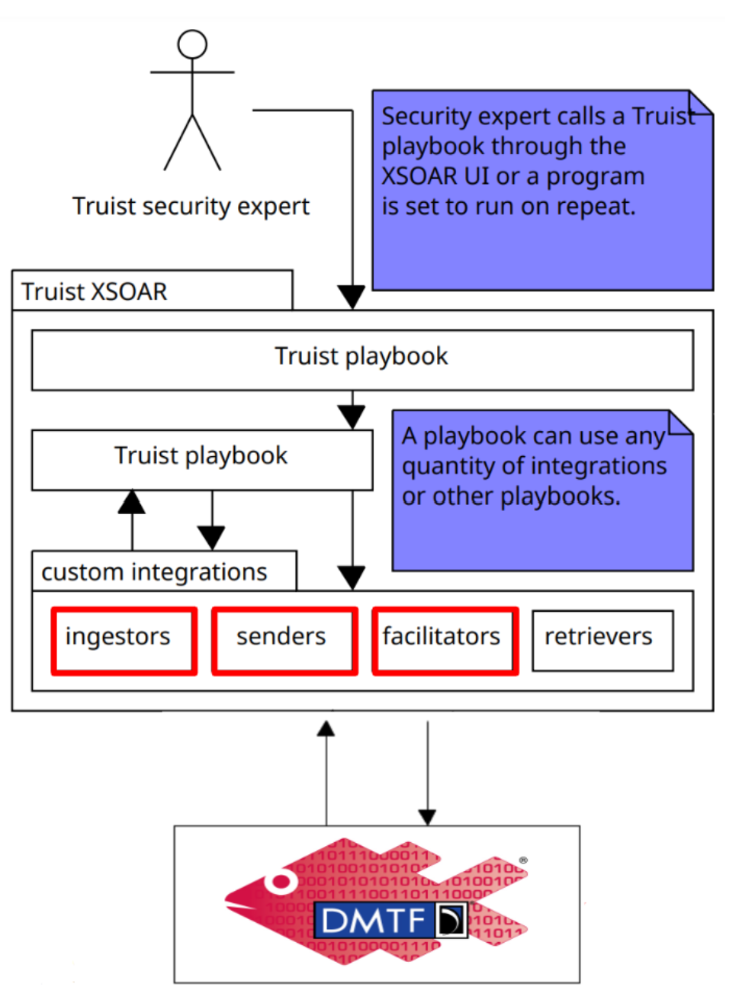
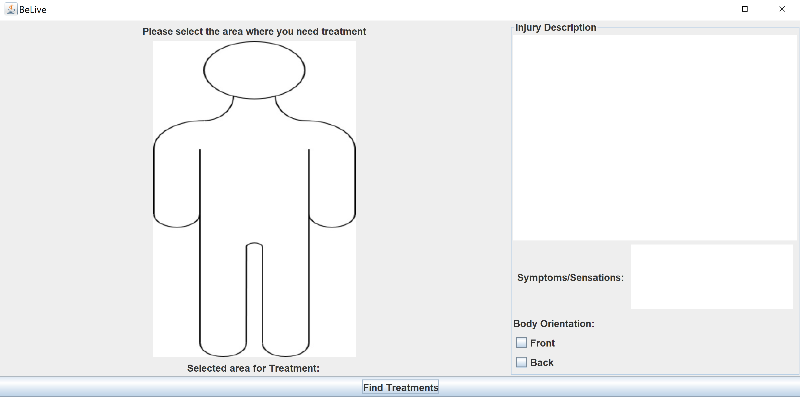
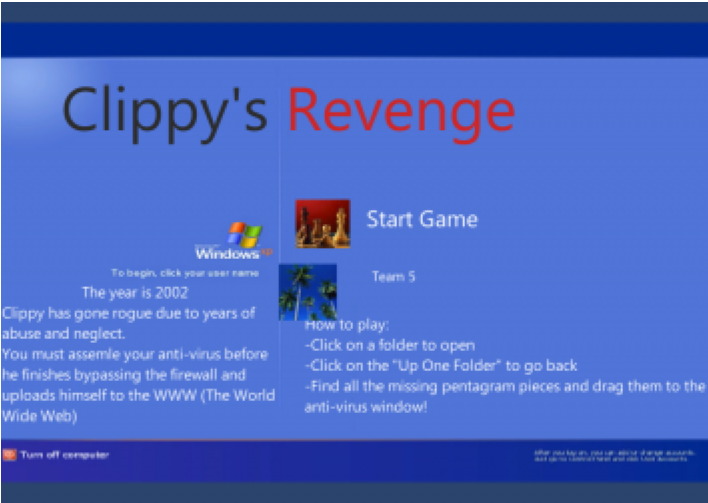
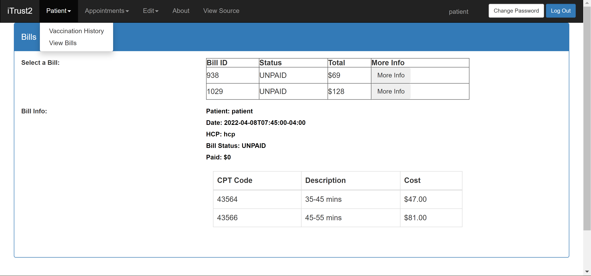
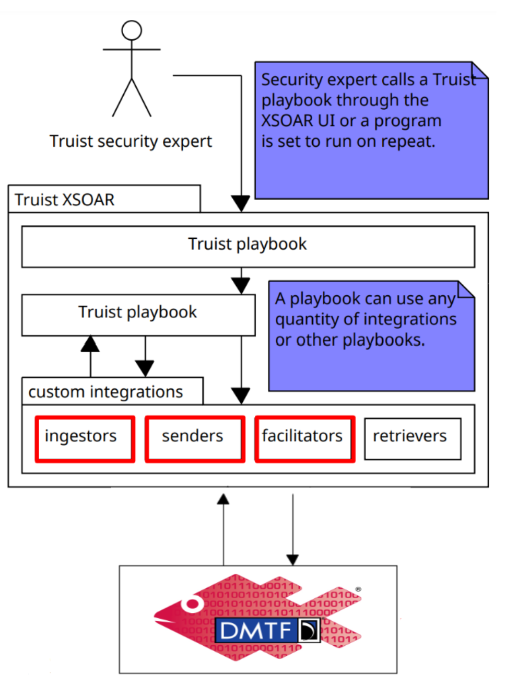
Language: Java
Timeline: 2020 - 2021
Code Repository https://github.com/elstanb/portfolio/tree/main/Calculator
This calculator is an attempt to recreate
the Windows calculator. This was my first experience in coding
a graphical user interface (GUI) using the Java Abstract
Window Toolkit. The program currently still has bugs but is able
to perform simple operations.
Language: Java
Timeline: 2020 - Current
Code Repository https://github.com/elstanb/portfolio/tree/main/BeLive
This application is a big project that is still in the works but
was invented with the hope that it will make life easier for those who
are less fortunate to have the tools that we do today in our society.
This application provides the medical attention for people who are in
areas with no doctors or lack of trust in the medical system in their society.
Therefore this application will act as a doctor or help guide the patient
on a path to curing or temporarily easing pain in the area of need. This will be
done through a database storing medical information relevant to the geographical
location where the person is. The program prompts for their name and other
revelant information, if they would like to provide it, and then asks them to
select the area on the body where the pain is and then provide an explanation
of what the issue is and symptoms. From this information the application will
searching through the database, which is stored locally in the application. Then
the application will list a table of multiple treatments that the user can find
in their area. If the user chooses to double click on the treatments shown in the
table more information regarding how to apply the treament in detail will be provided.
Many other features are yet to be added but the current design runs as a template with
dummy information.
Language: C#
Timeline: 2021
Code Repository https://globalgamejam.org/2021/games/clippys-revenge-4-0
This is a project that I worked on along side two very good
video game designers in the Imangi Global Game Jam 2021. In this
Global Game Jam we were given 48 hours to develop a game based on
the theme of Lost & Found. They created most of the game and I
attempted to create the task that I was given but as this was a
timed event my addition was not able to be added in time due to
compatability issues. This Game Jam taught me a lot about C#
and the game development application Unity.
Language: HMTL, AngularJS, SQL
Timeline: 2022
Code Repository https://github.ncsu.edu/engr-csc326-spring2022/csc326-TP-214-4/tree/main/iTrust2
This is a project that I worked on along side five other
computer science students. We introduced a new billing
functionality to the iTrust2 Medical Recording System. I
worked specifically on the front-end creating the view bills
page for both the patient and the billing staff member. I also
helped to fix issues with the backend API and SQL database.
Through this project I learned how to work togethe rwith a large
group of computer scientists and furthered my knowledge with
AngularJS and SQL.
Language: Python
Timeline: 2023
Code Repository https://github.ncsu.edu/engr-csc-sdc/2023SpringTeam16-Truist/tree/main/Redfish
This is a project that I worked on along side four other
computer science students. We expanded upon the current cybersecurity
tools that the Truist cybersecurity team was using in there XSOAR common
platform. In this project I worked on a subteam for a specific cybersecurity
tool that Truist wanted integrated to there system which was DMTF Redfish.
This tool needed to be integrated to the system with specific functionality
defined by our sponsor with Truist. The functionalities that they wanted
were specific to account management in there system: reset user password,
revoke privilege, and list all users on the system. This functionality
was created and properly integrated into the XSOAR system and will be
incorporated into the open source community.